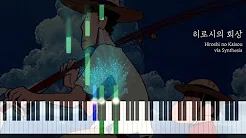
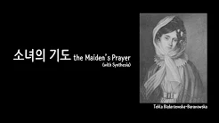
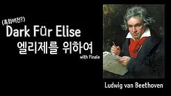

Player
#센과치히로의행방불명
#One Summer's Day
#Synthesia
One Summer's Day [Spirited Away] - Piano Tutorial
1K Views, 1 Month ago
1K
0
Share
Save
Report
BJ CHRIS
1K Subscribers
subscribe
Up Next

히로시의 회상 Hiroshi no Kaisou (with Synthesia)
Pianissimo- 보고 듣는 피아노연주곡
200 Views

소녀의 기도 the Maiden's Prayer synthesia
Pianissimo- 보고 듣는 피아노연주곡
50 Views

Dark Fur Elise 엘리제를 위하여 (ver. Dark) synthesia
Pianissimo- 보고 듣는 피아노연주곡
1K Views